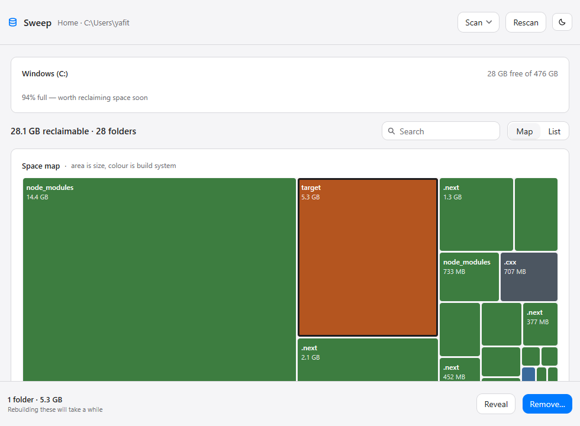
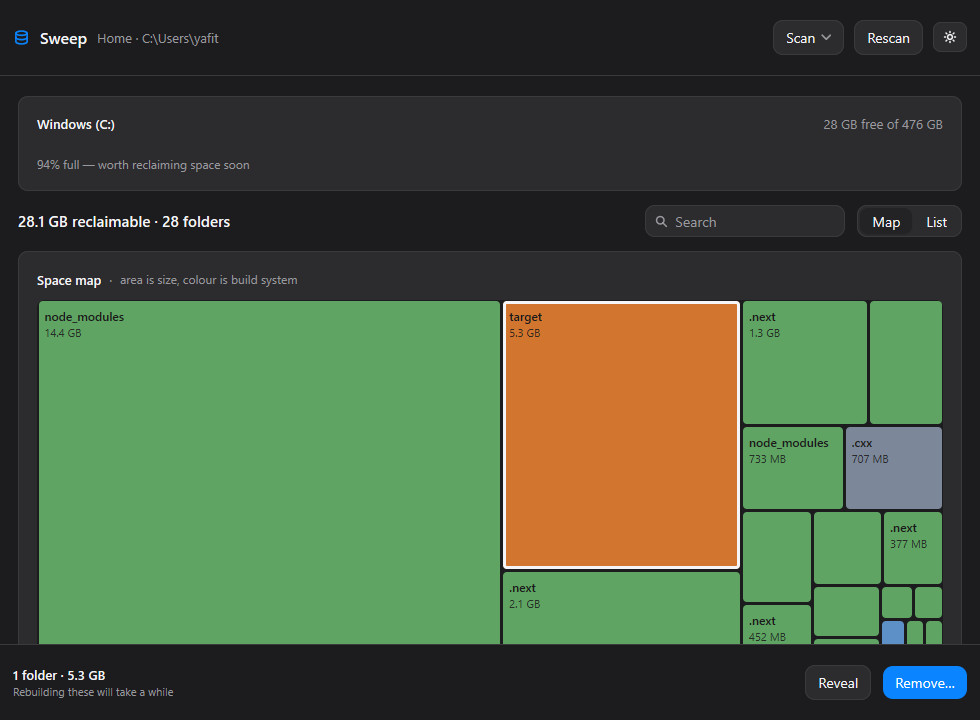
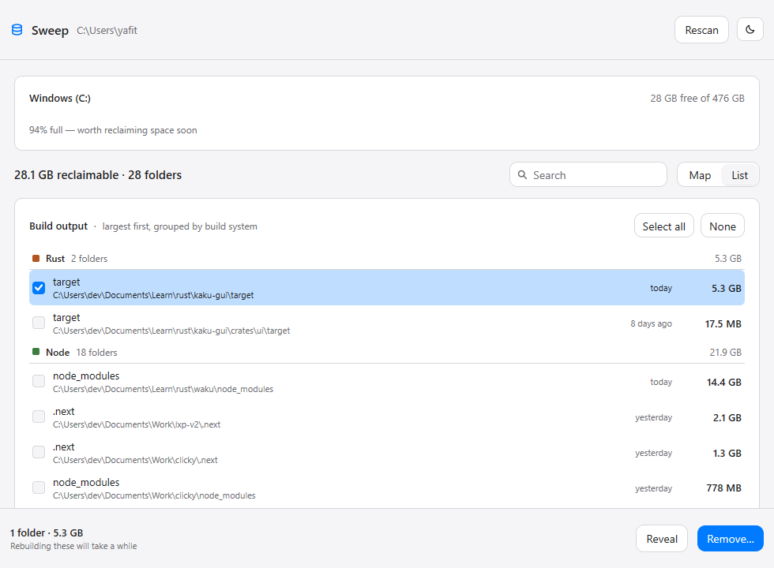

22.1GB
Reclaimable build output, found on one real disk in 3.7 seconds.
Rust target, node_modules, framework caches, Gradle and
Android trees — one per project, in places you have forgotten. Sweep finds
all of them, maps where the space went, and removes what you choose.
$ sweep --scan
scanning 1 root · 42 build directories
15.5 GB Node …\rust\waku\node_modules
5.7 GB Rust …\rust\kaku-gui\target
2.3 GB Node …\lxp-v2-frontend-nextjs\.next
1.4 GB Node …\clicky-frontend-nextjs\.next
… 38 more
22.1 GB reclaimable · 42 folders · 3.7s
C:\ 35.1 GB free of 476 GB — 92.6% fullBuild systems recognised — Rust, Node, Python, JVM, Xcode, CMake, .NET.
Directory rules. Four of them require a proof file before they will match.
Links or junctions followed. Windows is full of junctions that would recurse forever.
Two views of the same answer.
One tells you where the space went. The other tells you what to do about it. Both are the same data, so you never have to translate between them.


A squarified treemap, scoped to what is safe to remove
Disk visualisers show you every byte on the disk, which is a map of everything and an answer to nothing. This one draws only regenerable build output, so the whole map is actionable.
Grouped by build system, largest first
Exact paths, sizes, and how long ago each folder changed — which is what tells a project you are working in from one you abandoned last year.
Progress, not a frozen window
Deleting 15 GB takes a while. The footer reports which folder it is on, and the action is withdrawn until it finishes, so a second removal cannot start underneath it.
A cleaner is only as good as what it refuses.
Anyone can write a script that deletes node_modules. The hard part
is not deleting the directory that merely happens to be called
build. Sweep proves a match before it acts on it.
| Directory | Kind | Proof required |
|---|---|---|
| target | Rust | CACHEDIR.TAG — the tag Cargo writes. A folder merely named “target” is left alone. |
| build | JVM | build.gradle beside it. “build” is one of the most common directory names there is. |
| obj | .NET | *.csproj in the parent. MSBuild's obj sits beside the project, never inside it. |
| Pods | Xcode | Podfile beside it — CocoaPods writes it outside the folder. |
| node_modules | Node | None needed. Nothing else is called this. |
| __pycache__ | Python | None needed. |
| .cxx | CMake | None needed. Recorded whole, so one Android tree is one row rather than fifty. |
Every path is re-checked
Absolute, not a volume root, deep enough, not your home directory, not a link — and never a folder that contains another folder you also chose, which would count its bytes twice and delete it silently.
One confirmation, and it is specific
It names the count and the size, and says plainly that removal is permanent and the next build will take longer. No ritual around anything else — a confirmation you see constantly is one you stop reading.
Permanent, not the Recycle Bin
Sending 15 GB to the bin frees nothing until you empty it, which is the entire point of the exercise. Read-only files are cleared, because Cargo and NuGet leave them behind and Windows refuses to delete them.
The actionable view.
Same artifacts, grouped by build system, with a checkbox on every row and the total of what you have chosen. Reveal opens a folder in Explorer before you commit to deleting it.

Questions worth asking before you let something delete folders.
Will this delete my source code?
No. Every rule matches a build-output directory and nothing else. The four
generic names in the table above need a proof file before they match at
all, so a source folder called build is left alone. Removal is
permanent, so if you want certainty, use Reveal to look at a folder in
Explorer first.
Is it really 3.7 seconds? My disk is bigger.
That figure is one real measurement: 42 build directories under a
developer's Documents folder. The scan is a bounded worker
pool sized to your CPU count, and progress is published about five times a
second rather than per directory — a per-directory update would ask for
thousands of frames a second and spend the whole scan redrawing.
What happens if a folder is locked?
It is reported and the rest of the run continues. One locked directory does not abort a removal, and the summary tells you how many could not be removed rather than quietly reporting success.
Why not just use the Recycle Bin?
Because moving files to the bin does not free the space until it is emptied. A cleaner that leaves your disk exactly as full as it found it has not cleaned anything.
Does it need administrator rights or a runtime?
No. It installs per user with no elevation prompt and needs no runtime at all — no Node, no .NET, no webview. It is pure Go, compiled to one 11 MB executable, and it draws its own interface rather than hosting a browser.
Can I point it somewhere other than my home folder?
Yes. Choose a folder… in the empty state, or rescan against any directory — useful for a projects drive, or a second disk you have been avoiding. The choice is remembered between runs.
Get the space back.
Windows installer, per user, no admin prompt. MIT licensed.